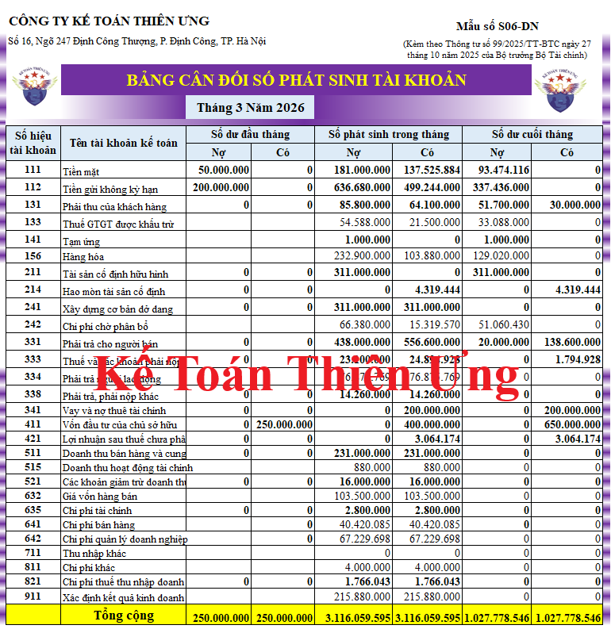

Bảng cân đối số phát sinh là sổ kế toán phản ánh tổng quát tình hình tăng giảm và hiện có về tài sản và nguồn vốn của đơn vị trong kỳ báo cáo và từ đầu năm đến cuối kỳ báo cáo. số liệu trên Bảng cân đối số phát sinh là căn cứ để kiểm tra việc ghi chép trên sổ kế toán tổng hợp, đồng thời đối chiếu và kiểm soát số liệu ghi trên Báo cáo tài chính
Mẫu bảng cân đối số phát sinh mới nhất năm 2026 là Mẫu số S06-DN được ban hành kèm theo Thông tư số 99/2025/TT-BTC có hiệu lực sử dụng từ ngày 01/01/2026
1. Mẫu số S06-DN Bảng cân đối số phát sinh theo Thông tư số 99
BẢNG CÂN ĐỐI SỐ PHÁT SINH
Tháng 09 năm 2026
|
||||||||||||||||||||||||||||||||||||||||||
2. Cách lập bảng cân đối phát sinh theo Mẫu số S06-DN của Thông tư số 99
Bảng Cân đối số phát sinh được lập dựa trên Sổ Cái và Bảng cân đối số phát sinh kỳ trước.
Trước khi lập Bảng cân đối số phát sinh phải hoàn thành việc ghi sổ kế toán chi tiết và sổ kế toán tổng hợp; kiểm tra, đối chiếu số liệu giữa các sổ có liên quan.
Số liệu ghi vào Bảng cân đối số phát sinh chia làm 2 loại:
- Loại số liệu phản ánh số dư các tài khoản tại thời điểm đầu kỳ (Cột 1,2 số dư đầu tháng), tại thời điểm cuối kỳ (cột 5, 6 số dư cuối tháng), trong đó các tài khoản có số dư Nợ được phản ánh vào cột “Nợ”, các tài khoản có số dư Có được phản ánh vào cột “Có”.
- Loại số liệu phản ánh số phát sinh của các tài khoản từ đầu kỳ đến ngày cuối kỳ báo cáo (cột 3, 4 số phát sinh trong tháng) trong đó tổng số phát sinh “Nợ” của các tài khoản được phản ánh vào cột “Nợ”, tổng số phát sinh “Có” được phản ánh vào cột “Có” của từng tài khoản.
- Cột A, B: Số hiệu tài khoản, tên tài khoản của tất cả các Tài khoản cấp 2 mà đơn vị đang sử dụng và một số Tài khoản cấp 2 cần phân tích.
- Cột 1, 2- Số dư đầu tháng: Phản ánh số dư đầu tháng của tháng đầu kỳ (Số dư đầu kỳ báo cáo), số liệu để ghi vào các cột này được căn cứ vào dòng số dư đầu tháng của tháng đầu kỳ trên Sổ Cái hoặc căn cứ vào phần “Số dư cuối tháng” của Bảng Cân đối số phát sinh kỳ trước.
- Cột 3, 4: Phản ánh tổng số phát sinh Nợ và tổng số phát sinh Có của các tài khoản trong kỳ báo cáo. số liệu ghi vào phần này được căn cứ vào dòng “Cộng phát sinh lũy kể từ đầu tháng” của từng tài khoản tương ứng trên Sổ Cái.
- Cột 5, 6 “Số dư cuối tháng”: Phản ánh số dư ngày cuối cùng của kỳ báo cáo. Số liệu để ghi vào phần này được căn cứ vào số dư cuối tháng của tháng cuối kỳ báo cáo trên Sổ Cái hoặc được tính căn cứ vào các cột số dư đầu tháng (cột 1, 2), số phát sinh trong tháng (cột 3, 4) trên Bảng cân đối số phát sinh tháng này. Số liệu ở cột 5, 6 được dùng để lập Bảng cân đối số phát sinh tháng sau.
Sau khi ghi đủ các số liệu có liên quan đến các tài khoản, phải thực hiện tổng cộng Bảng cân đối số phát sinh, số liệu trong Bảng cân đối số phát sinh phải đảm bảo tính cân đối bắt buộc sau đây:
Tổng số dư Nợ (cột 1), Tổng số dư Có (cột 2), Tổng số phát sinh Nợ (cột 3), Tổng số phát sinh Có (cột 4), Tổng số dư Nợ (cột 5) Tổng số dư Có (cột 6).
Ngoài việc phản ánh các tài khoản trong Bảng cân đối tài khoản, Bảng cân đối số phát sinh còn phản ánh số dư, số phát sinh của các tài khoản ngoài Bảng Cân đối tài khoản.
3. Mẫu bảng cân đối số phát sinh trên Excel:

--------------------------------------------
Các bạn muốn tải (download) Mẫu bảng cân đối số phát sinh bằng file Word hoặc trên file Excel theo Thông tư 99/2025/TT-BTC về để tham khảo và sử dụng thì có thể gửi mail về địa chỉ mail: ketoandieutam@gmail.com => Kế Toán Diệu Tâm sẽ gửi lại Mẫu bảng cân đối số phát sinh theo Thông tư 99/2025/TT-BTC bằng file Word hoặc file Excel này cho các bạn
--------------------------------------------